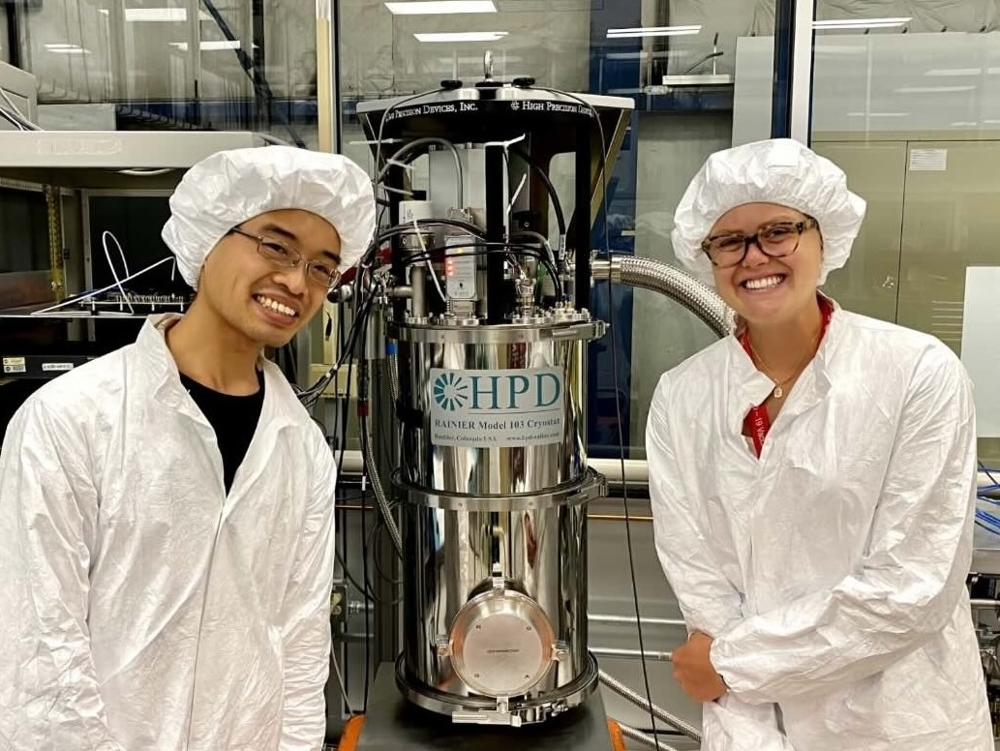
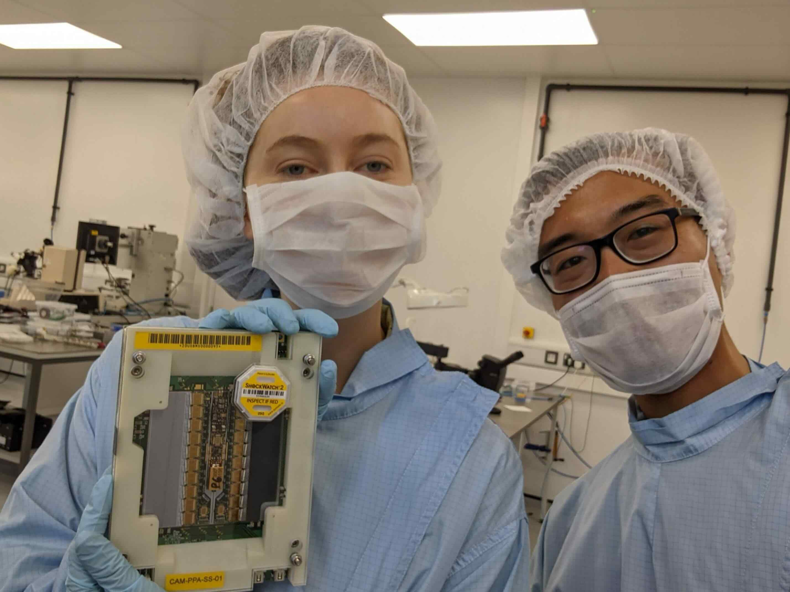

Join our welcoming and supportive NYU Experimental Particle Physics group. We seek creative and self-driven individuals from wide-ranging backgrounds to lead exciting research that advance your careers. You will be mentored not just by our friendly NYU group but also welcomed by collaborators in the vibrant global research community.


Fellowship opportunity: senior graduate students interested in leading original research at NYU are encouraged to ask their advisor to submit a nomination for the annual Simons Society of Fellows Junior Fellowship. Please contact an NYU faculty member to be the host mentor, ideally in the preceding July, so the department can prepare host letters of support (which take time) by early September deadline. The program limits each faculty member to host at most one fellow at a time. Research should appeal to a broad scientific audience to be competitive with the interdisciplinary selection panel.
Postdoctoral research positions in the NYU Experimental Particle Physics group are periodically advertised on the department Job Announcements webpage based on availability of grant funding.
January 2025 (Applications closed): Postdoctoral Associate position open. Interests in ATLAS tau-lepton electromagnetic dipoles and/or Inner Tracker are especially encouraged.
Prospective students: please apply via the NYU Graduate School of Arts and Sciences Admissions (Deadline December 30, 2025). The admissions committee looks favourably not just at strong academics but also experience and interest in both analysis and hands-on hardware research. Applicants are encouraged to read the group research pages to see if current physics interests align.
Current and admitted NYU students: those interested in ATLAS can contact me to discuss projects. An ATLAS PhD comprises two parts: (i) detector physics project to qualify you as an ATLAS author, and (ii) analysis of LHC collision data to measure fundamental parameters and/or search for new physics.
Prospective and admitted students interested in our group are strongly encouraged to apply to these external fellowships, which are excellent ways to independently support your graduate research:
National Science Foundation Graduate Research Fellowship Program (NSF GRFP) (Deadline October 16, 2026)
National Defense Science and Engineering Graduate (NDSEG) Fellowship (Deadline October 30, 2026)
American Association of University Women (AAUW) Fellowships
Paul and Daisy Soros Fellowships for New Americans
Office of Science Graduate Student Research (SCGSR) Program
GEM Fellowship Program
Fulbright Foreign Student Program
Do prepare these applications early in the Summer as deadlines are often early Fall.
Prospective students apply via NYU Undergraduate Admissions for the College of Arts and Sciences.
Current students interested in our group are encouraged to apply to the Dean's Undergraduate Research Fund for financial support.